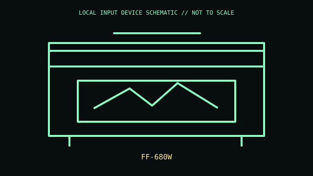

[ IMAGING AND AUDIO-CAPTURE PERIPHERALS // IDENTIFIED COMPONENT ]
Epson FastFoto FF-680W
Sheet-fed photo and document scanner with batch photo handling and wireless/networked workflows.

MODEL IDENTIFICATION: FF-680W. Confirm the printed SKU, revision, bundle, region, and included accessories before repair or compatibility claims.
Model specifications
| Catalog leaf | Imaging and audio-capture peripherals |
|---|---|
| Exact model / identifier | FF-680W |
| Mechanism and primary specifications | Epson rates up to 1 photo/sec at 300 dpi under its stated conditions; 36-photo batch feeder; USB and Wi-Fi; includes photo/document software. |
| Compatibility and interface caveats | Photo speed depends on resolution, restoration features, and media. Use Epson software/driver; do not feed fragile or curled photos without carrier/handling guidance. |
| Revision identification | Record the full label and software/firmware revision. Similar product-family names may use different protocols, components, connectors, or bundled accessories. |
Preservation and service
Clean rollers and glass as specified; document roller replacement and keep original photos flat and free of adhesive before feeding.
Separate observed condition and test setup from vendor-published specifications; record host OS, driver/app version, cables, adapters, and accessories.
Primary manufacturer sources
- Epson FastFoto FF-680W productManufacturer documentation; verify the exact SKU, revision, region, and accessories against the unit label.
- Epson FF-680W supportManufacturer documentation; verify the exact SKU, revision, region, and accessories against the unit label.
Manufacturer support pages can change; retain the applicable manual and its revision in the physical equipment record.